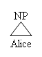
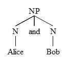

Help
Download
If you wish to use this app while not connected to the internet, you can download it here. Click "Download as zip", then extract to a location of your choice. To run the app, navigate to that location and double-click "index.html". For convenience, you can make a shortcut to "index.html" by right-clicking on it and selecting "Create shortcut". Place this shortcut in a more convenient location, such as on your desktop. If you are using Internet Explorer, you may have to click "Allow blocked content" for your trees to show up.
How to build a tree:
Mark the opening of constituents with an opening square bracket followed immediately by the category of the constituent. Leave a space between the category and anything to follow. If you would like to draw a triangle instead of a line between a category and its content, put a caret ^ in the category name. This app will build the tree as you type and will attempt to close any brackets that you may be missing. You can save the image to your computer by right-clicking on it and selecting "Save image as".
Examples:
[NP^ Alice]

[NP [N Alice] and [N Bob]]

[S[NP[N Alice]][VP[V is][NP[N'[N a student][PP^ of physics]]]]]

Movement Lines and Subscripts:
To show movement, mark the head of the movement with an underscore followed by a label after the category name, and the tail with the label between angled brackets. Any kind of constituent can be a head, but only leaves can be tails. The head constituent can not be an ancestor of the tail. Labels can only be strings of letters and numbers with no spaces. If your label consists of only numbers, it will show up as a subscript after the category name.
[CP [NP^_1 What] [C' [C_b did] [IP_2 [NP^ you] [I' [I tr<b>] [VP [V' [V eat] tr<1>]]]]]]

Linking to your tree
In some cases, you may find it more convenient to send a link than to send an image file of your tree. Also, you may want to bookmark a tree. In order to do this, simply append the string used to build your tree to the address of the app. For example: http://mshang.github.com/syntree?[NP^ Alice]. However, this type of link may not always work properly. To get a better link, click on the "Link to this tree" button and copy the address provided.